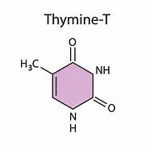
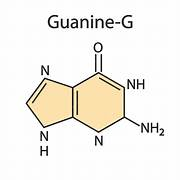
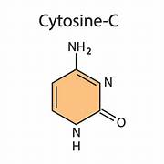
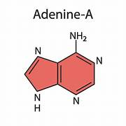

Es una base pirimidínica que siempre se empareja con la Adenina (A) en la estructura de la doble hélice del ADN.

Es una base púrica que se une específicamente a la Citosina (C).

Es una base púrica que siempre se empareja con la Timina (T).

Es una base pirimidínica que se empareja con la Guanina (G).